Hotgenes.Rmd
require(Hotgenes)
## Loading required package: Hotgenes
# incase you wanted to include aliases for your genes
# requires a "Feature" column that contains gene names in expression matrix
dbCon <- org.Hs.eg.db::org.Hs.eg_dbconn()
##
sqlQuery <- "SELECT * FROM ENSEMBL, gene_info WHERE ENSEMBL._id == gene_info._id;"
ensembl_Symbol <- DBI::dbGetQuery(dbCon, sqlQuery) %>%
dplyr::select(c("Feature" = "symbol", "ensembl_id"))
# HotgenesDEseq2 ----------------------------------------------------------
require(DESeq2)
## Loading required package: DESeq2
## Loading required package: S4Vectors
## Loading required package: stats4
## Loading required package: BiocGenerics
##
## Attaching package: 'BiocGenerics'
## The following objects are masked from 'package:stats':
##
## IQR, mad, sd, var, xtabs
## The following objects are masked from 'package:base':
##
## anyDuplicated, aperm, append, as.data.frame, basename, cbind,
## colnames, dirname, do.call, duplicated, eval, evalq, Filter, Find,
## get, grep, grepl, intersect, is.unsorted, lapply, Map, mapply,
## match, mget, order, paste, pmax, pmax.int, pmin, pmin.int,
## Position, rank, rbind, Reduce, rownames, sapply, setdiff, sort,
## table, tapply, union, unique, unsplit, which.max, which.min
##
## Attaching package: 'S4Vectors'
## The following object is masked from 'package:utils':
##
## findMatches
## The following objects are masked from 'package:base':
##
## expand.grid, I, unname
## Loading required package: IRanges
## Loading required package: GenomicRanges
## Loading required package: GenomeInfoDb
## Loading required package: SummarizedExperiment
## Loading required package: MatrixGenerics
## Loading required package: matrixStats
##
## Attaching package: 'MatrixGenerics'
## The following objects are masked from 'package:matrixStats':
##
## colAlls, colAnyNAs, colAnys, colAvgsPerRowSet, colCollapse,
## colCounts, colCummaxs, colCummins, colCumprods, colCumsums,
## colDiffs, colIQRDiffs, colIQRs, colLogSumExps, colMadDiffs,
## colMads, colMaxs, colMeans2, colMedians, colMins, colOrderStats,
## colProds, colQuantiles, colRanges, colRanks, colSdDiffs, colSds,
## colSums2, colTabulates, colVarDiffs, colVars, colWeightedMads,
## colWeightedMeans, colWeightedMedians, colWeightedSds,
## colWeightedVars, rowAlls, rowAnyNAs, rowAnys, rowAvgsPerColSet,
## rowCollapse, rowCounts, rowCummaxs, rowCummins, rowCumprods,
## rowCumsums, rowDiffs, rowIQRDiffs, rowIQRs, rowLogSumExps,
## rowMadDiffs, rowMads, rowMaxs, rowMeans2, rowMedians, rowMins,
## rowOrderStats, rowProds, rowQuantiles, rowRanges, rowRanks,
## rowSdDiffs, rowSds, rowSums2, rowTabulates, rowVarDiffs, rowVars,
## rowWeightedMads, rowWeightedMeans, rowWeightedMedians,
## rowWeightedSds, rowWeightedVars
## Loading required package: Biobase
## Welcome to Bioconductor
##
## Vignettes contain introductory material; view with
## 'browseVignettes()'. To cite Bioconductor, see
## 'citation("Biobase")', and for packages 'citation("pkgname")'.
##
## Attaching package: 'Biobase'
## The following object is masked from 'package:MatrixGenerics':
##
## rowMedians
## The following objects are masked from 'package:matrixStats':
##
## anyMissing, rowMedians
# loading example data
dds_con_dir <- system.file("extdata",
"dds_con.Rdata",
package = "Hotgenes",
mustWork = TRUE
)
load(dds_con_dir)
# Example Expression data and coldata
cts <- DESeq2::counts(dds_con) %>% as.data.frame()
Design <- SummarizedExperiment::colData(dds_con) %>%
base::as.data.frame() %>%
dplyr::select_if(is.factor) %>%
dplyr::mutate(Time = as.numeric(levels(.data$Hrs))[.data$Hrs])
# set up DESeq2
model_DESeq <- eval(~ sh * Hrs)
dds <- DESeq2::DESeqDataSetFromMatrix(
countData = cts,
colData = Design,
design = model_DESeq
)
dds <- DESeq2::DESeq(dds)
## estimating size factors
## estimating dispersions
## gene-wise dispersion estimates
## mean-dispersion relationship
## final dispersion estimates
## fitting model and testing
# Convert to Hotgenes Object
dds_Hotgenes <- HotgenesDEseq2(
DEseq2_object = dds,
lfcShrink_type = "apeglm",
contrasts = "sh_EWS_vs_Ctrl",
ExpressionData = "vsd",
Mapper = ensembl_Symbol
)
## using 'apeglm' for LFC shrinkage. If used in published research, please cite:
## Zhu, A., Ibrahim, J.G., Love, M.I. (2018) Heavy-tailed prior distributions for
## sequence count data: removing the noise and preserving large differences.
## Bioinformatics. https://doi.org/10.1093/bioinformatics/bty895
require(Hotgenes)
# incase you wanted to include aliases for your genes
# requires a "Feature" column that contains gene names in expression matrix
dbCon <- org.Hs.eg.db::org.Hs.eg_dbconn()
sqlQuery <-
"SELECT * FROM ENSEMBL, gene_info WHERE ENSEMBL._id == gene_info._id;"
ensembl_Symbol <- DBI::dbGetQuery(dbCon, sqlQuery) %>%
dplyr::select(c("Feature" = "symbol", "ensembl_id"))
# Hotgeneslimma -----------------------------------------------------------
require(DESeq2)
dds_con_dir <- system.file("extdata",
"dds_con.Rdata",
package = "Hotgenes",
mustWork = TRUE)
load(dds_con_dir)
# Example Expression data and coldata
cts <- counts(dds_con) %>% as.data.frame()
Design <- colData(dds_con) %>%
base::as.data.frame() %>%
dplyr::select_if(is.factor) %>%
dplyr::mutate(Time = as.numeric(levels(.data$Hrs))[.data$Hrs])
# Create DGEList object
# and calculate normalization factors
d0 <- edgeR::DGEList(cts)
d0 <- edgeR::calcNormFactors(d0)
# Filter low-expressed genes
# disabled in this example
if (FALSE) {
cutoff <- 1
drop <- which(apply(cpm(d0), 1, max) < cutoff)
d <- d0[-drop,]
dim(d) # number of genes lef
}
d <- d0
# make a model.matrix
model_Matrix <- model.matrix( ~ sh * Hrs,
data = Design)
# voom
vm_exp <- limma::voom(d, model_Matrix)
# make fit
fit <- limma::lmFit(vm_exp, model_Matrix)
fit <- limma::eBayes(fit)
# Get alternative exps
alt_Exp <- list(counts = data.matrix(d0))
# Convert to Hotgenes Object
fit_Hotgenes <- Hotgeneslimma(
limmafit = fit,
coldata = Design,
Expression = vm_exp,
Expression_name = "logCPM",
Exps_list = alt_Exp,
Mapper = ensembl_Symbol
)
library(Hotgenes)
# load example data -------------------------------------------------------
dds_Hotgenes_dir <- system.file("extdata",
paste0("dds_Hotgenes", ".RDS"),
package = "Hotgenes",
mustWork = TRUE
)
htgs <- readRDS(dds_Hotgenes_dir)
# preparing data -----------------------------------------------------------
# Getting example named list of DE statistics
NewDE <- Output_DE_(htgs, as_list = TRUE, padj_cut = 1)
# Getting example named list of normalized data
NormlData <- Normalized_Data_(htgs)
# Getting example coldata
ExpColdata <- coldata_(htgs)
# Getting example original data object used for DE analysis
# This example was generated from DESeq2
OrigDEObj <- O_(htgs)
OrigDEObj %>% class()
## [1] "DESeqDataSet"
## attr(,"package")
## [1] "DESeq2"
# Getting example design matrix
DE_design <- designMatrix_(htgs)
# Getting example mapper
MapperDF <- Mapper_(htgs)
# Converting example objects to hotgenes
Hotgenes_Object <- HotgenesUniversal(
Output_DE = NewDE,
Normalized_Expression = NormlData,
coldata = ExpColdata,
Original_Object = OrigDEObj,
designMatrix = DE_design,
Mapper = MapperDF
)
calling a Hotgenes object returns a summary table
library(Hotgenes)
fit_Hotgenes
## class: Hotgenes
## Original class/package: EList/limma
##
## Differential expression (default thresholds):
## |contrast | total|
## |:--------------|-----:|
## |Hrs_2_vs_0 | 45|
## |Hrs_6_vs_0 | 71|
## |sh_EWS_vs_Ctrl | 51|
## |shEWS.Hrs2 | 8|
## |shEWS.Hrs6 | 1|
##
## Available feature mapping: Feature, ensembl_id
## ExpressionSlots: logCPM, counts
## Total auxiliary assays: 2
## Total samples: 12Sample metadata
coldata_(fit_Hotgenes)
## sh Bio_Rep Hrs Time
## shCON_0hrs_1 Ctrl 1 0 0
## shCON_0hrs_2 Ctrl 2 0 0
## shCON_2hrs_1 Ctrl 1 2 2
## shCON_2hrs_2 Ctrl 2 2 2
## shCON_6hrs_1 Ctrl 1 6 6
## shCON_6hrs_2 Ctrl 2 6 6
## shEWS_0hrs_1 EWS 1 0 0
## shEWS_0hrs_2 EWS 2 0 0
## shEWS_2hrs_1 EWS 1 2 2
## shEWS_2hrs_2 EWS 2 2 2
## shEWS_6hrs_1 EWS 1 6 6
## shEWS_6hrs_2 EWS 2 6 6Normalized expression data
ExpressionData_(fit_Hotgenes)[c(1:3), c(1:3)]
## shCON_0hrs_1 shCON_0hrs_2 shCON_2hrs_1
## AGER 5.699205 6.356261 6.030818
## ALOX12 3.377277 3.372749 3.472823
## ALOX15 5.699205 5.795961 5.512351Available aliases
Mapper_(fit_Hotgenes) %>% head()
## # A tibble: 6 × 2
## Feature ensembl_id
## <chr> <chr>
## 1 AGER ENSG00000204305
## 2 AGER ENSG00000230514
## 3 AGER ENSG00000229058
## 4 AGER ENSG00000231268
## 5 AGER ENSG00000237405
## 6 AGER ENSG00000234729Available auxiliary_assays
auxiliary_assays_(fit_Hotgenes)
## assay1 assay2
## shCON_0hrs_1 -1.4805676 -0.77956651
## shCON_0hrs_2 1.5771695 0.01195176
## shCON_2hrs_1 -0.9567445 -0.15241624
## shCON_2hrs_2 -0.9200052 -0.70346425
## shCON_6hrs_1 -1.9976421 1.18887916
## shCON_6hrs_2 -0.2722960 0.34051227
## shEWS_0hrs_1 -0.3153487 0.50696817
## shEWS_0hrs_2 -0.6282552 -0.29330515
## shEWS_2hrs_1 -0.1064639 0.22364142
## shEWS_2hrs_2 0.4280148 2.00720146
## shEWS_6hrs_1 -0.7777196 1.01197912
## shEWS_6hrs_2 -1.2938823 -0.30245925
DE(fit_Hotgenes, Topn = 3)
## $Hrs_2_vs_0
## # A tibble: 3 × 11
## Feature contrast_dir baseMean log2FoldChange FC stat pvalue padj
## <chr> <chr> <dbl> <dbl> <dbl> <dbl> <dbl> <dbl>
## 1 IL6 Hrs_2_vs_0_up 10.6 2.52 5.72 31.1 4.06e-24 1.04e-21
## 2 CXCL8 Hrs_2_vs_0_up 10.9 3.51 11.4 26.0 6.99e-22 8.92e-20
## 3 TNFAIP3 Hrs_2_vs_0_up 10.5 2.14 4.42 24.9 2.21e-21 1.88e-19
## # ℹ 3 more variables: t <dbl>, B <dbl>, ensembl_id <chr>
##
## $Hrs_6_vs_0
## # A tibble: 3 × 11
## Feature contrast_dir baseMean log2FoldChange FC stat pvalue padj
## <chr> <chr> <dbl> <dbl> <dbl> <dbl> <dbl> <dbl>
## 1 CXCL8 Hrs_6_vs_0_up 10.9 3.56 11.8 26.4 4.21e-22 1.07e-19
## 2 CXCL1 Hrs_6_vs_0_up 11.3 2.35 5.09 24.5 3.71e-21 4.73e-19
## 3 CCL2 Hrs_6_vs_0_up 12.5 1.25 2.37 23.0 2.14e-20 1.56e-18
## # ℹ 3 more variables: t <dbl>, B <dbl>, ensembl_id <chr>
##
## $sh_EWS_vs_Ctrl
## # A tibble: 3 × 11
## Feature contrast_dir baseMean log2FoldChange FC stat pvalue padj
## <chr> <chr> <dbl> <dbl> <dbl> <dbl> <dbl> <dbl>
## 1 C1R sh_EWS_vs_Ctrl_… 13.5 -0.856 0.553 -16.7 1.33e-16 3.39e-14
## 2 C1R sh_EWS_vs_Ctrl_… 13.5 -0.856 0.553 -16.7 1.33e-16 3.39e-14
## 3 CCL2 sh_EWS_vs_Ctrl_… 12.5 -1.00 0.500 -15.8 5.92e-16 7.55e-14
## # ℹ 3 more variables: t <dbl>, B <dbl>, ensembl_id <chr>
##
## $shEWS.Hrs2
## # A tibble: 3 × 11
## Feature contrast_dir baseMean log2FoldChange FC stat pvalue padj t
## <chr> <chr> <dbl> <dbl> <dbl> <dbl> <dbl> <dbl> <dbl>
## 1 TNFAIP3 shEWS.Hrs2_d… 10.5 -0.565 0.676 -4.69 5.84e-5 0.0149 -4.69
## 2 CXCL3 shEWS.Hrs2_d… 7.90 -1.05 0.482 -3.94 4.57e-4 0.0233 -3.94
## 3 FOS shEWS.Hrs2_up 8.98 0.645 1.56 4.14 2.67e-4 0.0233 4.14
## # ℹ 2 more variables: B <dbl>, ensembl_id <chr>
##
## $shEWS.Hrs6
## # A tibble: 1 × 11
## Feature contrast_dir baseMean log2FoldChange FC stat pvalue padj t
## <chr> <chr> <dbl> <dbl> <dbl> <dbl> <dbl> <dbl> <dbl>
## 1 FOS shEWS.Hrs6_up 8.98 0.826 1.77 4.53 8.92e-5 0.0227 4.53
## # ℹ 2 more variables: B <dbl>, ensembl_id <chr>all comparisons
DEPlot(fit_Hotgenes, .log2FoldChange = 0, padj_cut = 0.1)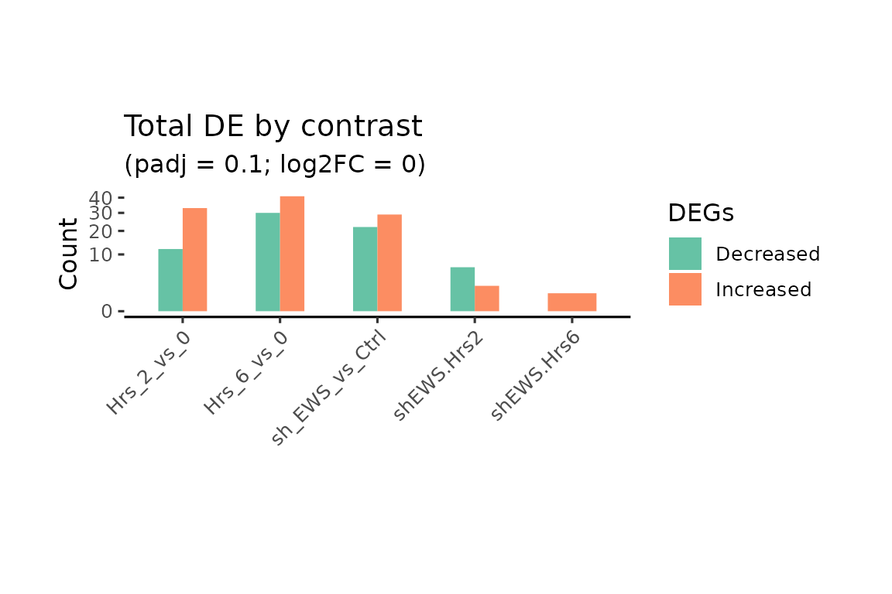
Check for a feature of interest
# Check a feature across comparisons
DEPlot(fit_Hotgenes, hotList = "CSF1", .log2FoldChange = 0, padj_cut = 0.1)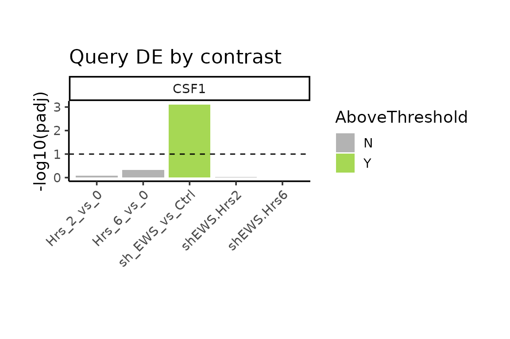
VPlot(fit_Hotgenes,
.log2FoldChange = 1, padj_cut = 0.1,
contrasts = "sh_EWS_vs_Ctrl")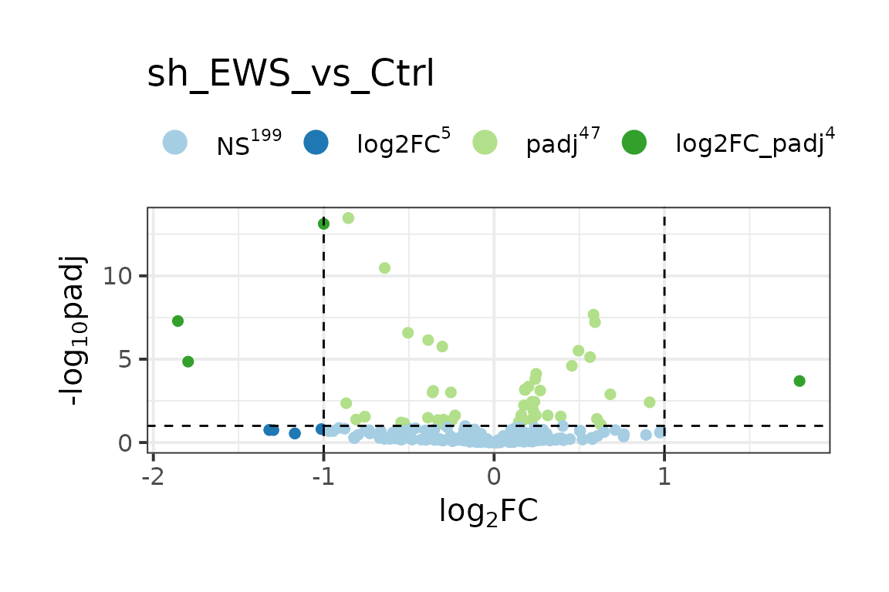
# Venn Diagram plot
fit_Hotgenes %>%
DE(
Report = "Features",
contrasts = c("sh_EWS_vs_Ctrl", "Hrs_2_vs_0", "Hrs_6_vs_0"),
.log2FoldChange = 0, padj_cut = 0.1
) %>%
Venn_Report()
## Coordinate system already present. Adding new coordinate system, which will
## replace the existing one.
## $vennD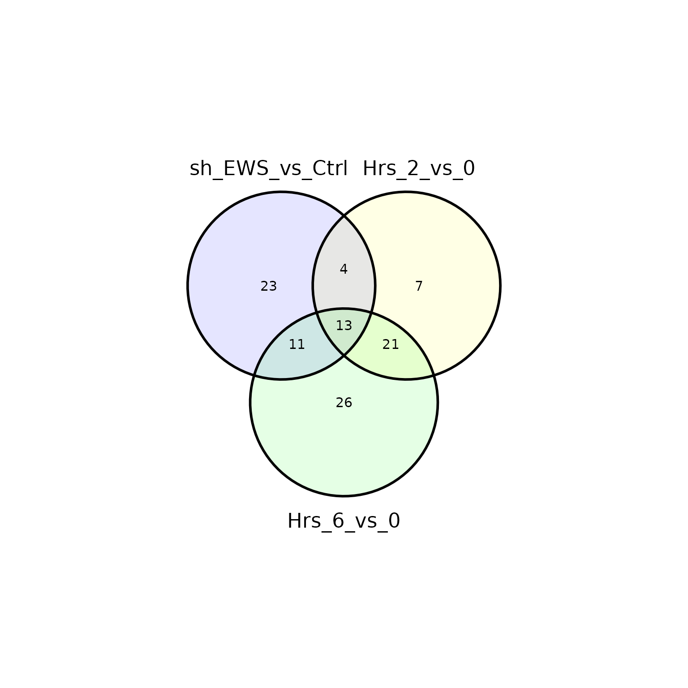
##
## $Intsect
## $Intsect$Hrs_2_vs_0
## [1] "NFE2L2" "KEAP1" "PDGFA" "HDAC4" "OXER1" "GAPDH" "MEF2C"
##
## $Intsect$Hrs_6_vs_0
## [1] "CXCL5" "STAT2" "NR3C1" "MAP3K1" "HSPB2" "MAPK8" "DAXX" "MKNK1"
## [9] "MAP2K6" "IL1B" "BCL6" "TLR3" "GRB2" "IL6R" "IL15" "CREB1"
## [17] "IL1RN" "RELA" "IFIT3" "MAP3K5" "TGFB3" "TGFB2" "IL1A" "CCL20"
## [25] "PGK1" "MAPK3"
##
## $Intsect$sh_EWS_vs_Ctrl
## [1] "HIF1A" "C3" "RAC1" "GNB1" "TUBB" "BCL2L1" "CSF1" "PTGER3"
## [9] "ROCK2" "MX2" "HMGN1" "CLTC" "GNAQ" "LY96" "CD40" "CFD"
## [17] "HRAS" "RHOA" "HPRT1" "TCF4" "MX1" "OAS2" "LTB4R2"
##
## $Intsect$`Hrs_2_vs_0:Hrs_6_vs_0`
## [1] "CXCL8" "TNFAIP3" "CXCL1" "IL11" "PTGS2" "DDIT3" "IFIT2"
## [8] "TGFBR1" "MAFF" "CXCR4" "MAFK" "PTGFR" "FOS" "MYC"
## [15] "RIPK2" "IL2" "MAFG" "CSF2" "TWIST2" "IFIT1" "FLT1"
##
## $Intsect$`sh_EWS_vs_Ctrl:Hrs_2_vs_0`
## [1] "HMGB2" "MAP3K9" "CEBPB" "IRF1"
##
## $Intsect$`sh_EWS_vs_Ctrl:Hrs_6_vs_0`
## [1] "C1R" "C1S" "MMP3" "CXCL6" "STAT1" "PTGS1" "HMGB1" "MASP1" "TRAF2"
## [10] "IFI44" "CCL7"
##
## $Intsect$`sh_EWS_vs_Ctrl:Hrs_2_vs_0:Hrs_6_vs_0`
## [1] "CCL2" "IL1R1" "MEF2D" "JUN" "BIRC2" "CXCL3"
## [7] "MEF2A" "CXCL2" "IL6" "NFKB1" "SMAD7" "MAPKAPK2"
## [13] "RELB"
##
##
## $Names
## [1] "Hrs_2_vs_0:Hrs_6_vs_0"
## [2] "sh_EWS_vs_Ctrl:Hrs_2_vs_0"
## [3] "sh_EWS_vs_Ctrl:Hrs_6_vs_0"
## [4] "sh_EWS_vs_Ctrl:Hrs_2_vs_0:Hrs_6_vs_0"
# run PCA
# set contrast of choice and metadata variables
FactoOutput <- FactoWrapper(fit_Hotgenes,
contrasts = "Hrs_6_vs_0",
coldata_ids = c("Hrs", "sh"),
biplot = FALSE
)
# plot
FactoOutput$res_PPI_pa_1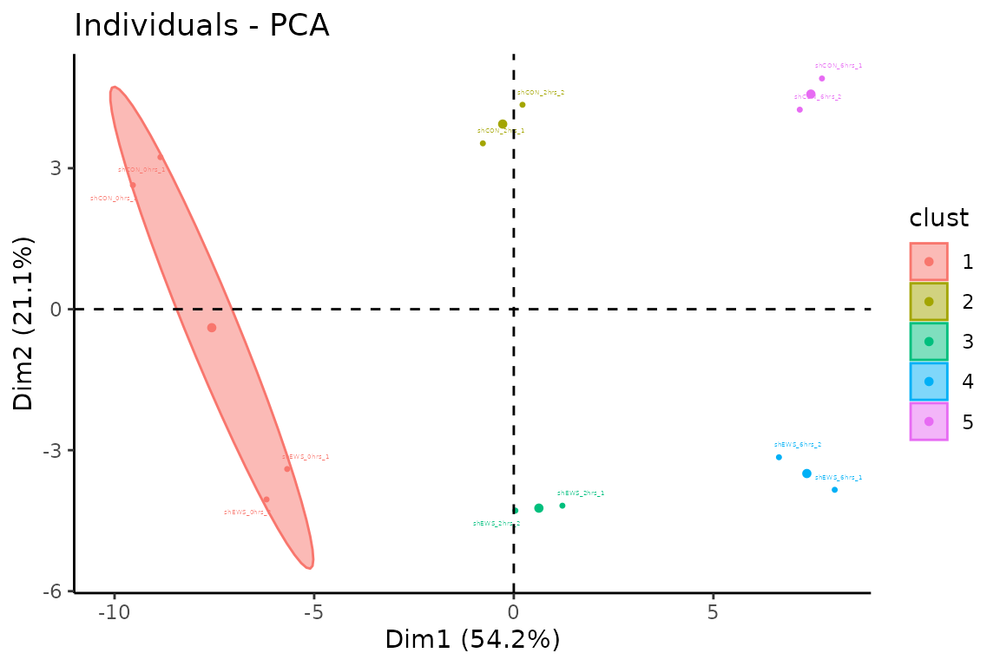
# getting HCPC details
FactoOutput$TopTibble # Feature
## # A tibble: 88 × 9
## Cluster Interpretation Feature v.test `Mean in category` `Overall mean`
## <fct> <fct> <chr> <dbl> <dbl> <dbl>
## 1 1 Cluster has elevated IFIT2 2.91 10.3 9.89
## 2 1 Cluster has elevated DDIT3 2.75 10.4 10.1
## 3 1 Cluster has elevated MAP3K1 2.72 10.0 9.75
## 4 1 Cluster has elevated PTGFR 2.65 10.4 10.1
## 5 1 Cluster has elevated PGK1 2.63 15.3 15.2
## 6 1 Cluster has elevated TWIST2 2.51 13.3 13.1
## 7 1 Cluster has elevated IFIT3 2.51 9.09 8.85
## 8 1 Cluster has elevated MKNK1 2.34 10.9 10.7
## 9 1 Cluster has elevated IFIT1 2.22 10.8 10.4
## 10 1 Cluster has elevated STAT2 2.20 12.6 12.5
## # ℹ 78 more rows
## # ℹ 3 more variables: `sd in category` <dbl>, `Overall sd` <dbl>, p.value <dbl>
FactoOutput$TopGroups # TopGroups
## # A tibble: 1 × 8
## Cluster Interpretation Category `Cla/Mod` `Mod/Cla` Global p.value v.test
## <fct> <fct> <chr> <dbl> <dbl> <dbl> <dbl> <dbl>
## 1 1 Cluster has elevat… Hrs=Hrs… 100 100 33.3 0.00202 3.09
# Having metadata embedded with expression data means easier plotting
yvar <- c("CSF2", "IL6")
xvar <- "Hrs"
ExpsPlot(fit_Hotgenes,
xVar = xvar,
yVar = yvar,
fill = "Hrs",
boxplot = TRUE
)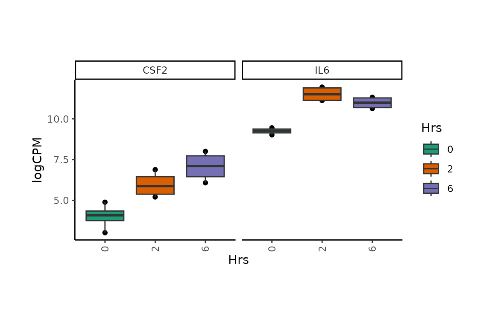
# Subset data on the fly
ExpsPlot(fit_Hotgenes,
xVar = xvar,
yVar = yvar,
filter_eval = Hrs != 2,
fill = "Hrs",
boxplot = TRUE
)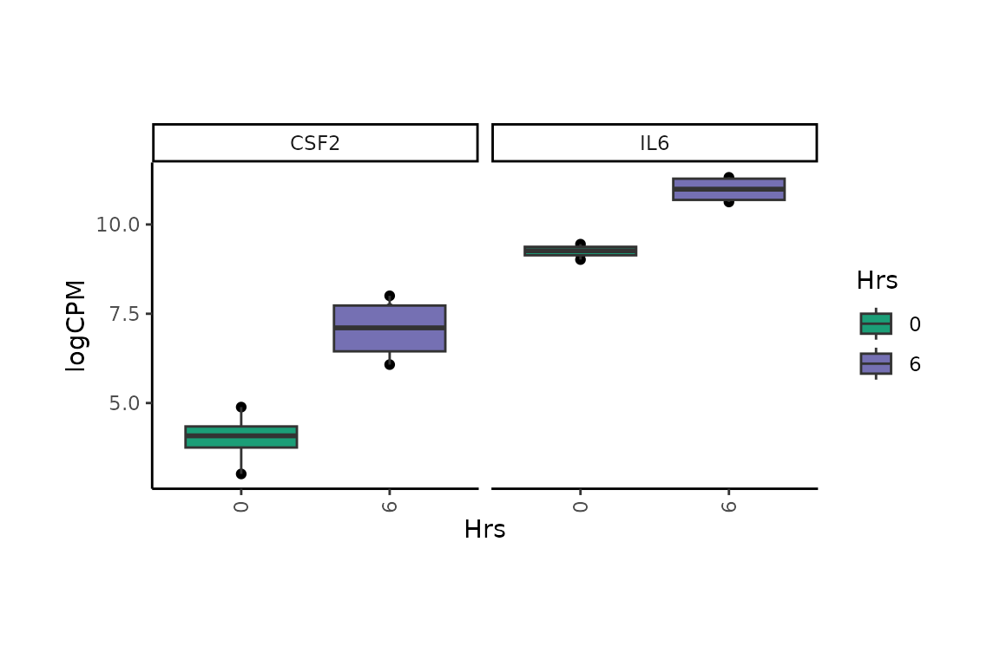
# Reorder data on the fly
ExpsPlot(fit_Hotgenes,
xVar = xvar,
yVar = yvar,
boxplot = TRUE,
fill = "Hrs",
named_levels = list(Feature = "IL6",
Hrs = c("6", "2", "0"))
)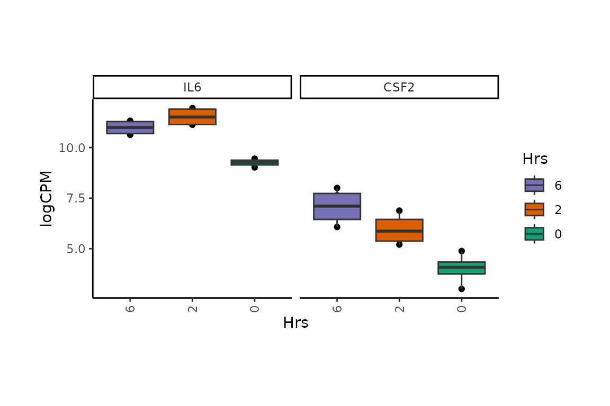
DEphe(fit_Hotgenes,
contrasts = "sh_EWS_vs_Ctrl",
Topn = 5,
cellheight = 10,
cellwidth = 8,
annotation_colors = coldata_palettes(fit_Hotgenes),
annotations = c("Hrs", "sh"))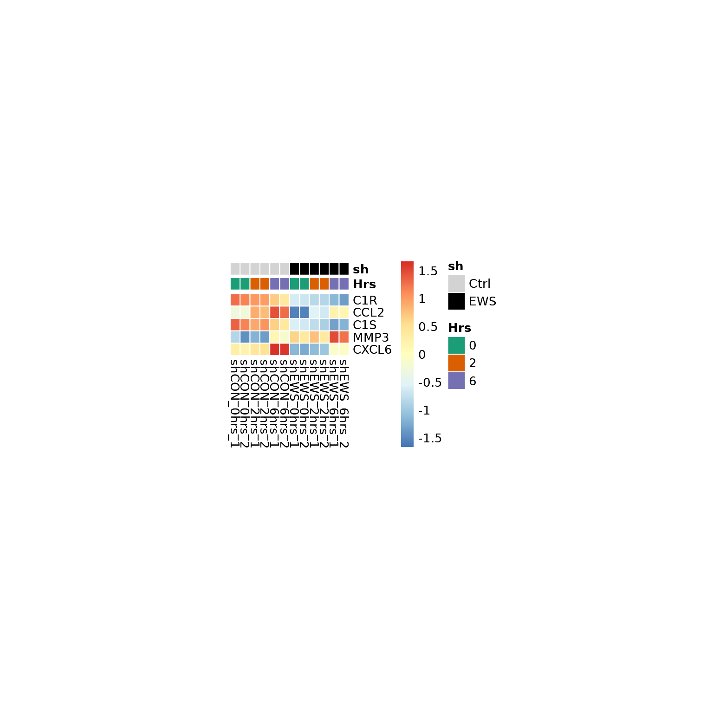
# change labels to ensembl_id
DEphe(fit_Hotgenes,
contrasts = "sh_EWS_vs_Ctrl",
label_by = "ensembl_id",
Topn = 5,
cellheight = 10,
cellwidth = 8,
annotation_colors = coldata_palettes(fit_Hotgenes),
annotations = c("Hrs", "sh"))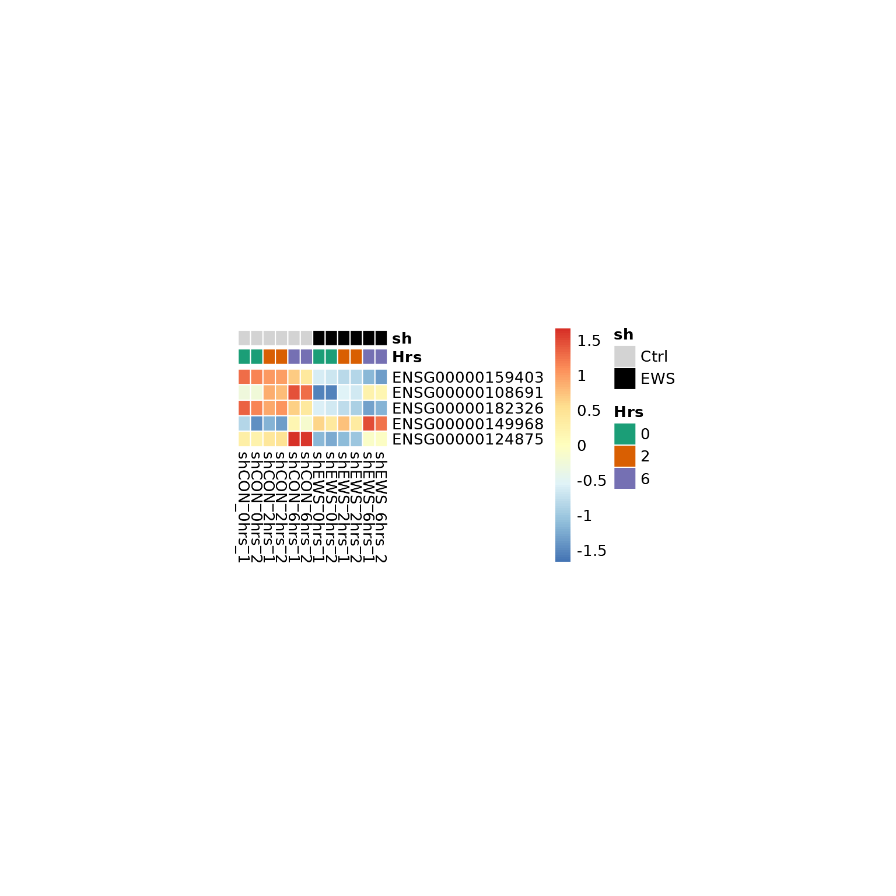
# get geneset
H_paths <- msigdbr_wrapper(
species = "human",
set = "CP:KEGG",
gene_col = "gene_symbol"
)
# Get ranks
InputRanks <- fit_Hotgenes %>%
DE(
Report = "Ranks",
contrasts = "Hrs_2_vs_0",
Rank_name = "Feature",
padj_cut = 0.1
)
# fgsea wrapper --------
Out_GSEA <- fgsea_(
Ranks = InputRanks,
pathways = H_paths,
nproc = 1,
minSize = 5,
maxSize = Inf
)
## [1] "Hrs_2_vs_0"
## | | | 0% | |=================================== | 50% | |======================================================================| 100%
# Get details for all
Out_GSEA %>%
fgsea_Results(
contrasts = "Hrs_2_vs_0",
padj_cut = 0.2,
mode = "D"
)
## $Hrs_2_vs_0
## # A tibble: 5 × 9
## pathway pval padj log2err ES NES size leadingEdge sign_NES
## <chr> <dbl> <dbl> <dbl> <dbl> <dbl> <int> <list> <dbl>
## 1 kegg_nod_like_r… 0.00969 0.0737 0.381 0.770 1.58 9 <chr [6]> 1
## 2 kegg_cytokine_c… 0.0184 0.0737 0.352 0.708 1.55 14 <chr [9]> 1
## 3 kegg_chemokine_… 0.0517 0.135 0.219 0.734 1.44 7 <chr [7]> 1
## 4 kegg_jak_stat_s… 0.0779 0.135 0.181 0.748 1.39 5 <chr [2]> 1
## 5 kegg_toll_like_… 0.0844 0.135 0.174 0.742 1.38 5 <chr [3]> 1
# Or for one
Out_GSEA %>%
fgsea_Results(
contrasts = "Hrs_2_vs_0",
padj_cut = 0.2,
mode = "leadingEdge"
)
## $Hrs_2_vs_0
## $Hrs_2_vs_0$kegg_nod_like_receptor_signaling_pathway
## [1] "IL6" "CXCL8" "TNFAIP3" "CXCL1" "CCL2" "CXCL2"
##
## $Hrs_2_vs_0$kegg_cytokine_cytokine_receptor_interaction
## [1] "IL6" "CXCL8" "CXCL1" "IL11" "CCL2" "CXCL3" "CXCL2" "TGFBR1"
## [9] "CXCR4"
##
## $Hrs_2_vs_0$kegg_chemokine_signaling_pathway
## [1] "CXCL8" "CXCL1" "CCL2" "CXCL3" "CXCL2" "CXCR4" "NFKB1"
##
## $Hrs_2_vs_0$kegg_jak_stat_signaling_pathway
## [1] "IL6" "IL11"
##
## $Hrs_2_vs_0$kegg_toll_like_receptor_signaling_pathway
## [1] "IL6" "CXCL8" "JUN"
# Generate a summary plot
Out_GSEA %>%
GSEA_Plots(
contrasts = "Hrs_2_vs_0",
padj_cut = 0.2,
width = 30,
Topn = 2
)
## $Hrs_2_vs_0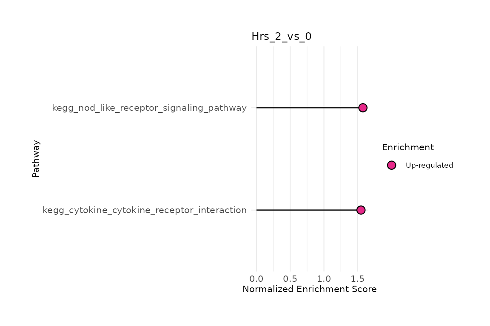
# plotEnrichment_
plotEnrichment_(
Out_GSEA, "Hrs_2_vs_0",
"kegg_nod_like_receptor_signaling_pathway"
)
## leading edge genes for kegg_nod_like_receptor_signaling_pathway
## c("IL6", "CXCL8", "TNFAIP3", "CXCL1", "CCL2", "CXCL2")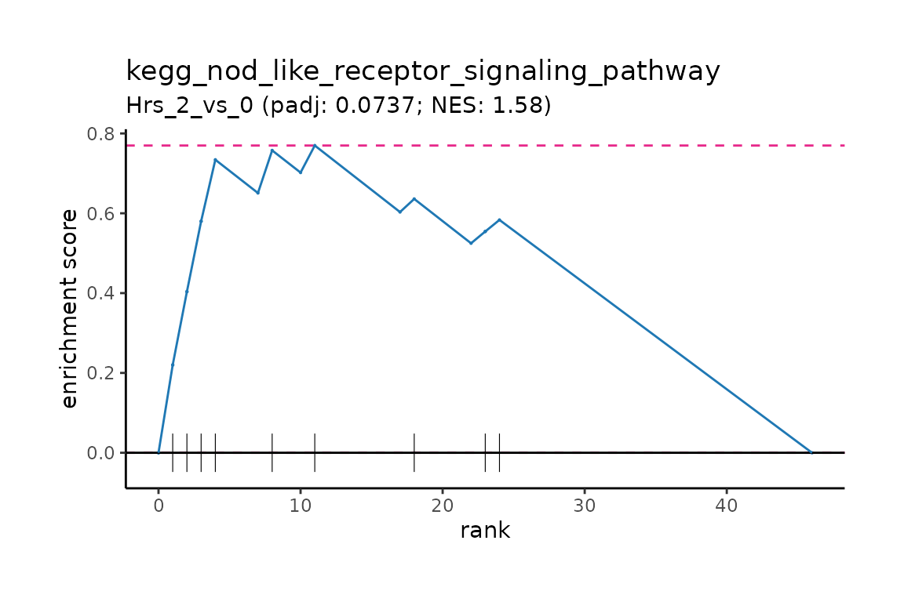
choice_set <- "CP:KEGG"
choice_id <- "gene_symbol"
gsList <- msigdbr_wrapper(
species = "human",
set = choice_set,
gene_col = choice_id
)
# HotgeneSets -------------------------------------------------------------
HotgeneSets_out <- HotgeneSets(
Hotgenes = fit_Hotgenes,
geneSets = gsList,
kcdf = "Gaussian",
method = "ssgsea",
minSize = 2,
maxSize = Inf
)
## [1] "using Feature col"
## [1] "building mapper"
## Estimating ssGSEA scores for 93 gene sets.
## [1] "Calculating ranks..."
## [1] "Calculating absolute values from ranks..."
## | | | 0% | |====== | 8% | |============ | 17% | |================== | 25% | |======================= | 33% | |============================= | 42% | |=================================== | 50% | |========================================= | 58% | |=============================================== | 67% | |==================================================== | 75% | |========================================================== | 83% | |================================================================ | 92% | |======================================================================| 100%
##
## [1] "Normalizing..."
HotgeneSets_out
## class: Hotgenes
## Original class/package: EList/limma
##
## Differential expression (default thresholds):
## |contrast | total|
## |:--------------|-----:|
## |Hrs_2_vs_0 | 45|
## |Hrs_6_vs_0 | 54|
## |sh_EWS_vs_Ctrl | 29|
## |shEWS.Hrs2 | 0|
## |shEWS.Hrs6 | 0|
##
## Available feature mapping: Feature, value
## ExpressionSlots: ssgsea
## Total auxiliary assays: 2
## Total samples: 12
# store your Hotgenes objects in a named list
# The Shiny_Hotgenes() will let you toggle between objects
if(FALSE){
List_Hotgenes <- list(HotgeneSets_out = HotgeneSets_out,
fit_Hotgenes = fit_Hotgenes)
Shiny_Hotgenes(List_Hotgenes)
}See manual for details!
if(FALSE){
Shiny_Hotgenes(dds_Hotgenes)
}